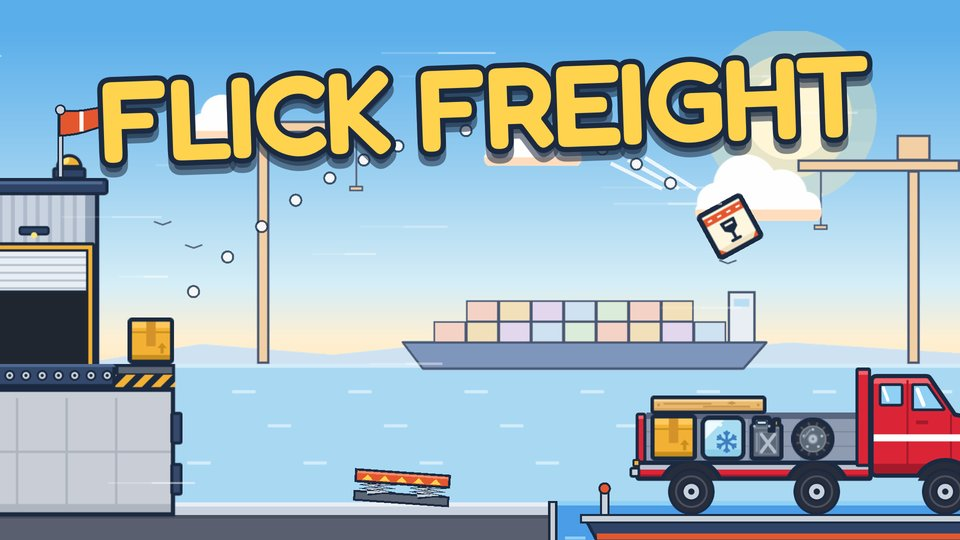
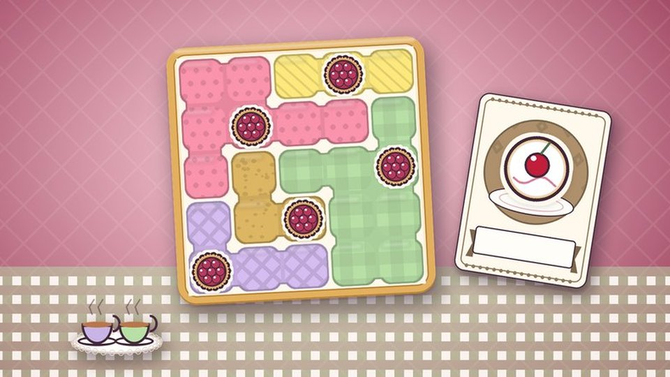

Flick Freight
Drag back, let go, and flick cargo from the dock into the truck. Stack it full without toppling it.
Bite-sized browser games. No downloads, no sign-ups: pick one and press play.

Drag back, let go, and flick cargo from the dock into the truck. Stack it full without toppling it.

One cake in every row, column and patch of dough, and no two cakes touching. A calm, cozy logic puzzle.